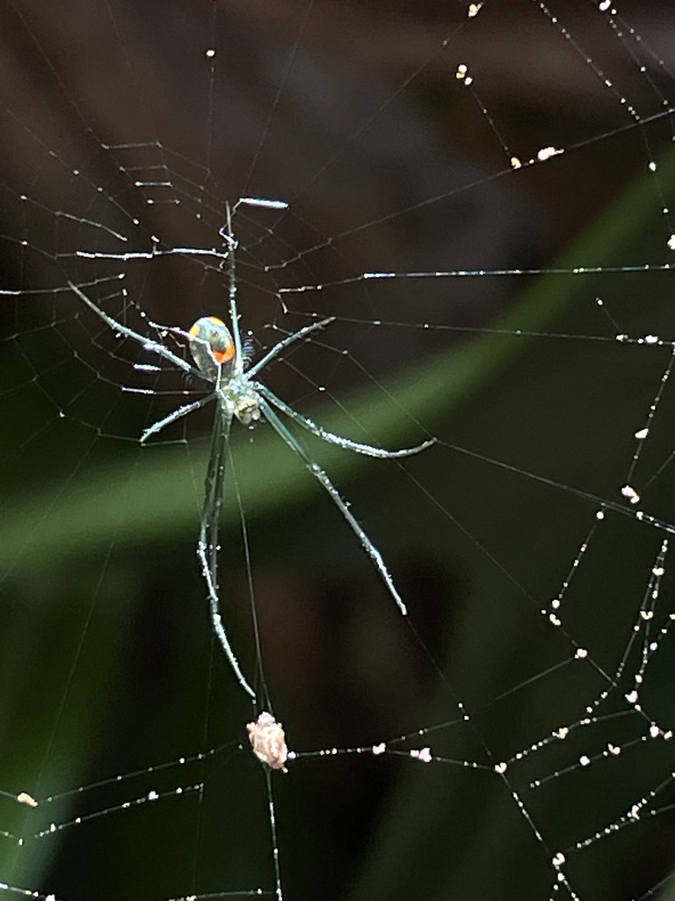

- The web hangs horizontal rather than vertical — a signature trait of this family. The spider positions itself at the center, belly facing up, so what you actually see is the silvery underside glittering in the sun.
- The abdomen's metallic sheen is functional as well as beautiful. The pearly-silver dorsal surface reflects sunlight, while the underside displays flashes of green, yellow, and a vivid orange or red crescent that can startle a visitor into thinking they have found a miniature black widow.
- When threatened, this spider does not stay and bluff — it simply drops from the web on a silk dragline and disappears into the leaf litter below.
- The genus name Leucauge comes from Greek and means 'with a bright gleam' — an apt name for a spider whose abdomen looks as though it has been dipped in silver paint.
A small, delicate spider with a notably elongated abdomen and long, slender legs. Females measure about 1/4 inches in body length; males are smaller at about 1/8 inches. The body looks disproportionately large for such fine legs.
Silvery-white to pearly with a dark stripe running lengthwise down the center and ending in a black tip. Additional dark, green, or brown streaks may flank the central stripe. This is the side that faces the ground when the spider is at rest — you usually see it from below.
The belly is what you see most often: silvery with bright patches of green or yellow, and a distinctive reddish-orange, crescent- or bowtie-shaped marking near the rear. This coloration has caused many first-time observers to confuse this spider with a black widow — the two are nothing alike in web structure or body shape.
Legs are long and slender, typically greenish with dark banding at the joints. The carapace (head-thorax section) is yellowish-green to light brown with dark stripes along the sides.
Leucauge argyra, also found in Florida, is nearly identical but lacks the bright orange spots on the abdomen — those orange accents are the most reliable way to confirm L. argyrobapta in the field. The larger golden silk orbweaver (Trichonephila clavipes) also hangs upside down in a web but is much larger, has distinctive leg tufts, and spins a vertical yellow-tinted web.
Silent in any airborne sense — no vocalizations are produced. Communication happens entirely through the web itself, via substrate-borne vibrations. During courtship, the male enters the female's web and begins plucking, bouncing, and vibrating the structural threads in a deliberate, rhythmic pattern, signaling his identity and intent. This patterned signal is distinct from the frantic, irregular struggling of trapped prey, telling the female to hold her attack response while he approaches.
Look for a small, jewel-like spider hanging belly-up at the center of a tilted orb web strung at knee-to-waist height in shrubby vegetation. The silvery, elongated abdomen with a vivid orange or red crescent on the underside is the key field mark. The greenish legs with dark joints, and the nearly horizontal web, clinch the identification. In Florida, the presence of bright orange spots on the abdomen separates this species from the very similar L. argyra.
Small flying and jumping insects that become trapped in the web — gnats, mosquitoes, small flies, and similarly sized soft-bodied insects make up the bulk of the diet. The spider detects prey by vibrations transmitted through the web silk, rushes to the struggling insect, and immobilizes it with venom before wrapping it in silk.
Walk slowly along any shrubby path or woodland edge in the park, especially in areas where low branches and stems create a dense tangle at waist height or below. The tilted, roughly horizontal web is easiest to spot when backlit by low sun — the silk catches the light and the spider's silver abdomen glitters at the hub. Damp, shaded sections of the garden tend to have the highest densities.
Present throughout the warmer months; most conspicuous from late spring through early fall when adults are mature and webs are at full size. Activity peaks in the morning when webs are intact and dew may outline the silk. Florida's mild winters mean some individuals or juveniles may persist year-round, though adults are most reliably encountered from roughly April through October.
Observe freely and get as close as you like — this spider is indifferent to quiet observers and will not bite unless physically handled or pressed against the skin. Resist the urge to disturb the web; the silk takes real energy to produce. If you step through a web accidentally, move on — the spider will begin repairs promptly.

- © Kitty O’Neil (CC-BY-NC), via iNaturalist
- © zara_nature_nerd (CC-BY-NC), via iNaturalist